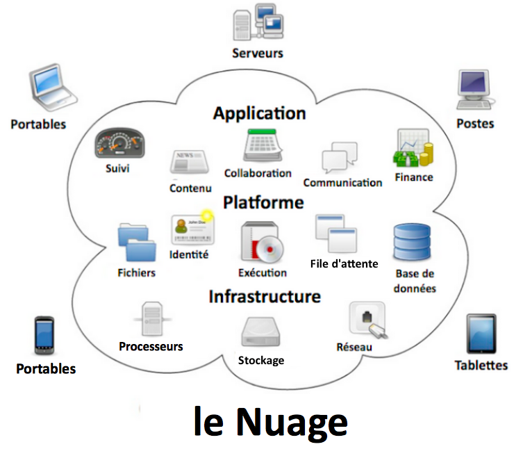

Le Cloud
Introduction
Le cloud computing est l'exploitation de la puissance de calcul ou de stockage de serveurs informatiques distants par l'intermédiaire
d'un réseau, généralement Internet
I) Vue d'ensemble

II) Principes
•SAAS = Software As A Service
•PAAS = Platform As A Service
•IAAS = Infrastructure As A Service
III) Quelques acteurs
Conclusion